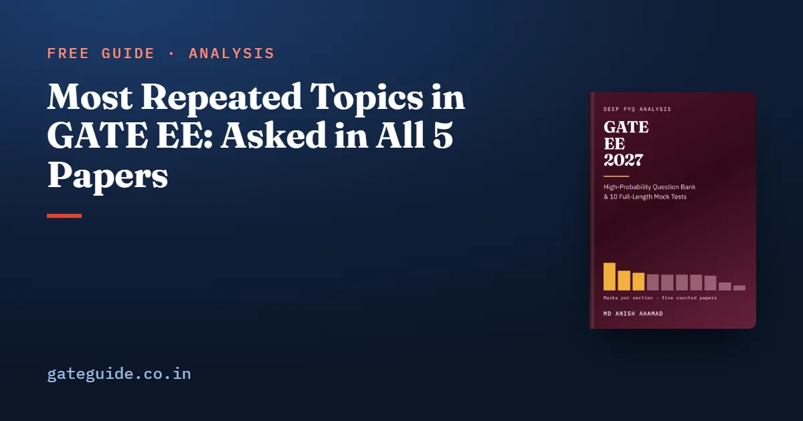

Most Repeated Topics in GATE EE: Asked in All 5 Papers

Ten technical topic groups in GATE EE drew marks in every paper from 2022 to 2026: calculus, linear algebra, probability, induction machines, op-amps, network transients, DC to DC converters, economic load dispatch, power devices, and fault analysis. Together they carried 134 of the 425 technical marks set. This guide names each one, says what the papers asked of it, and explains why this core repays study to depth, with the honest caution that five papers are a small record.
In this guide
Key takeaways
- Ten technical topic groups were examined in all five papers from 2022 to 2026, carrying 134 of 425 technical marks.
- Twelve more were examined in four papers, carrying 99 marks; the 22 groups together hold 233 marks, more than half.
- Engineering Mathematics supplies three of the ten: calculus, linear algebra, and probability and statistics.
- What repeats is the concept and the question shape, never the wording.
- Five papers from five institutes are a small record; a five-of-five topic is a strong pattern, not a guarantee.
- A topic missing from this list is not safe to skip.
What "most repeated" means here
A topic group is a cluster of related syllabus phrases, such as "symmetrical components and fault analysis". The GATE EE 2027 book divided the ten technical sections into 84 such groups and placed every counted question in exactly one.
A topic is repeated in this guide if it drew marks in a paper. It is five of five if it drew marks in all five papers. That is the strongest signal five papers can give: the setters, under five different institutes, did not once leave it out.
The ten topic groups examined in every paper
| Topic group | Section | Marks, 2022-2026 |
|---|---|---|
| Calculus, vector calculus and integral theorems | Engineering Mathematics | 28 |
| Linear algebra | Engineering Mathematics | 20 |
| Three-phase induction machines | Electrical Machines | 17 |
| Operational amplifiers | Analog and Digital Electronics | 14 |
| Probability and statistics | Engineering Mathematics | 12 |
| Transient response of DC and AC networks | Electric circuits | 11 |
| DC to DC converters: buck, boost, buck-boost | Power Electronics | 10 |
| Economic load dispatch | Power Systems | 8 |
| Thyristor, MOSFET and IGBT characteristics and gating | Power Electronics | 7 |
| Symmetrical components and fault analysis | Power Systems | 7 |
| Total | 134 |
Remember: These ten groups appeared in every counted paper. If your preparation has a gap, make sure it is somewhere else.
What the papers asked of each
The three mathematics groups
In calculus, vector calculus is the core: nine of its fifteen questions. The directional derivative was set in four consecutive papers, 2022 to 2025, with Green's theorem and the divergence theorem beside it. In linear algebra, four ideas recur: eigenvalues and their algebra, the Cayley-Hamilton theorem, rank and the solution count of , and special matrices such as skew-symmetric and orthogonal. In probability, the steady thread is the random variable: its density, its expectation, and what a function does to it.
Machines, electronics and circuits
For three-phase induction machines, starting or speed control was asked in every paper. Know slip, the power split in the rotor and the torque-slip curve. For op-amps, expect the ideal-op-amp analysis of a standard circuit, and once a gain with finite open-loop gain. For network transients, the first-order response from initial value, final value and time constant does most of the work.
Power electronics and power systems
DC to DC converters were asked every year, usually as a waveform worked through to a number. The device group covers static characteristics and gating of the thyristor, MOSFET and IGBT, and in 2026 the power diode as the nearest item. Economic load dispatch, with and without losses, and symmetrical components with fault analysis complete the ten.
A worked example on one five-of-five topic
Here is a buck converter question of the kind the record keeps returning to. The numbers are made up.
A buck converter steps 24 V down with duty ratio , switching at kHz with , in continuous conduction. Find the output voltage and the peak-to-peak inductor current ripple.
In continuous conduction the output is the duty ratio times the input. The ripple is the output voltage times the off-fraction, divided by :
Trap: These formulas hold only in continuous conduction. If the question gives a load light enough for the current to reach zero each cycle, the output rises above and you must use the discontinuous-mode analysis.
A second example, from Power Systems
Economic load dispatch was asked in all five papers. The rule is that every unit inside its limits runs at the same incremental cost .
Two units have incremental costs and in rupees per MWh, with in MW. They share a 200 MW load, losses neglected. Set each equal to and add the outputs:
So MW and MW. Check that they add to 200 MW and sit inside any stated limits.
Why this core repays depth
Depth here means being able to solve a version you have never seen, quickly, without a formula sheet. Three reasons make that worth the time.
- These groups are the most consistently examined material in the record.
- Several feed other sections. Transients decide questions in Power Electronics and Measurements; eigenvalues decide state-space questions in Control.
- The papers use these topics as NAT questions often, so recognising an option is not enough.
The next layer is the twelve groups examined in four papers, such as linear time invariant systems, load flow, stability with the equal area criterion, Bode plots and inverters. The book gives every one of the 84 groups with its marks in each year.
In one line: Know the ten five-of-five groups cold, then the twelve four-of-five groups, then read everything else the syllabus names.
The caution that goes with any repeated-topics list
Five papers is a small record. A topic examined five times is consistent with "always asked" and also with "asked often so far". A topic examined once or never may simply not have been drawn yet.
So read this list as "these are near-certain", never as "everything else is safe". Thirteen named topic groups, from magnetic circuits to Schmitt triggers, have never been asked, and the syllabus still names them. The papers were set under five institutes, none of them IIT Madras, which organises 2027; the IIT Madras organising-institute guide explains what that does and does not imply.
Keep General Aptitude running beside this core, since its four aptitude areas also appeared in every paper. Practise the NAT-heavy topics with the virtual calculator guide, and check how each answer type is scored in the marking scheme common to every GATE paper.
Quick revision
- Ten technical groups drew marks in all five papers, 134 of 425 technical marks.
- Twenty-two groups in four or five papers hold 233 marks, more than half.
- Directional derivatives appeared in four consecutive papers, 2022 to 2025.
- Induction-machine starting or speed control was asked every year.
- Buck in continuous conduction: , ripple .
- Economic dispatch: equal incremental cost for every unit inside its limits.
- Concepts repeat, wording does not; five papers are a small record.
Frequently asked questions
Which topics are asked every year in GATE EE?
Counted from the official papers of 2022 to 2026, ten technical topic groups drew marks in all five. They are calculus, linear algebra, probability, three-phase induction machines, op-amps, network transients, DC to DC converters, economic load dispatch, power device characteristics, and symmetrical components with fault analysis. Five papers are a small record, so treat this as a pattern.
How many marks do the most repeated GATE EE topics carry?
The ten topic groups examined in all five papers carried 134 of the 425 technical marks set from 2022 to 2026. Add the twelve groups examined in four papers and the total reaches 233 marks, more than half. That is a counted history, not a promise about 2027.
Are induction motors important for GATE EE?
Yes. Three-phase induction machines were examined in every paper from 2022 to 2026 and carried 17 marks, the largest topic group in Electrical Machines. Starting or speed control of the machine was asked in every one of those papers, so learn the equivalent circuit and the torque-slip relation thoroughly.
Do GATE EE questions repeat exactly from previous years?
No. Concepts and question shapes repeat, not wording. A topic examined five years running tells you the setters keep returning to it, but each paper asks it in a new way. Learn the method well enough to solve an unfamiliar version, rather than memorising past questions.
Sources
Dates, fees and the syllabus are set by the GATE 2027 organising institute and can change. Always confirm at gate2027.iitm.ac.in.